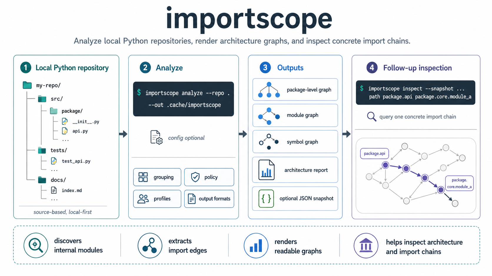
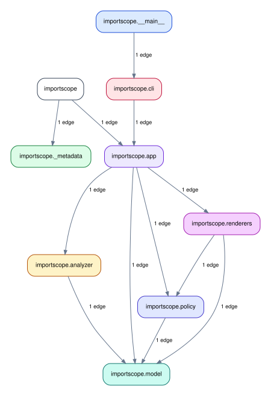

importscope is a local-first CLI for understanding Python package structure
through imports. It is source-based, meaning that it does not execute the target
package and it does not build a runtime call graph.
It reads Python source files, discovers internal modules, extracts import edges, and renders readable graphs and short reports.
Typical use
importscope is useful when you want to:
- understand an unfamiliar Python codebase quickly
- inspect one concrete import chain
- review architectural boundaries inside a package
- surface private or forbidden imports
- generate visual artifacts before refactoring
What you get
importscope can generate:
- package-level and module-level dependency graphs
- symbol import graphs
- optional CSV and JSON evidence files
- a Markdown architecture report
The default run stays minimal: SVG graphs plus the Markdown report. JSON, CSV, and source graph files are opt-in.
importscope on itself
The docs build also runs importscope on this repository itself,
generating among others the following package-level dependency graph:

Default behavior
Without a config, importscope stays structural:
- it shows direct and lazy imports
- it groups modules into readable boxes
- it does not classify edges as forbidden or private
Policy mode is opt-in through a custom .importscope.yml configuration file.
On larger repos, the important decision is usually not "which command do I run?" but "what slice of the repo do I want this run to explain?" The example guides show a few coherent strategies:
- analyze one whole package when the package is already a useful architectural boundary
- focus on one subpackage inside a much larger repo
- exclude unrelated modules to isolate one cross-layer question
- add policy rules only after the structural view is readable
Next steps
-
Installation
Set up
importscopelocally and verify the minimal environment before running the first analysis. -
Quickstart
Walk through the demo repository end to end on a small package you can fully inspect.
-
Examples and guides
See how the same commands are scoped differently on larger repositories and more specific architectural questions.
-
CLI reference
Go straight to the command reference if you already know the workflow you want and need exact options.